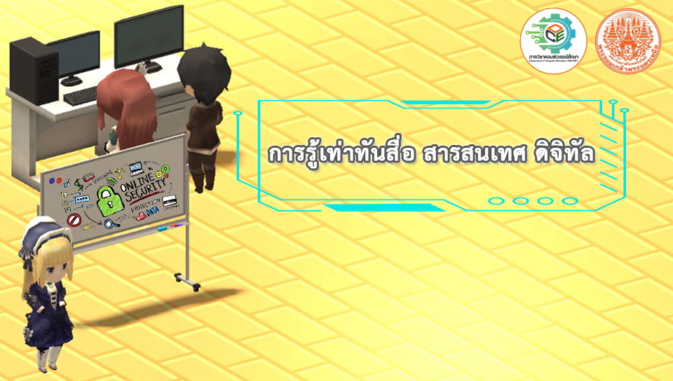

เกม 3 มิติ เสริมสร้างทักษะการรู้เท่าทันสื่อ สารสนเทศ และดิจิทัล
ในยุคที่เทคโนโลยีสารสนเทศและการสื่อสารมีการพัฒนาอย่างรวดเร็ว สื่อดิจิทัลได้กลายเป็นส่วนหนึ่งของชีวิตประจำวันของคนทุกวัย โดยเฉพาะเด็กและวัยรุ่นที่เป็นกลุ่มผู้ใช้หลักของสื่อออนไลน์ เช่น โซเชียลมีเดีย เว็บไซต์วิดีโอ และแอปพลิเคชันต่างๆ
การเข้าถึงข้อมูลที่หลากหลายส่งผลให้เด็กสามารถเรียนรู้และพัฒนาทักษะต่าง ๆ ได้ แต่ในขณะเดียวกันก็มีความเสี่ยงจากการได้รับข้อมูลที่ไม่ถูกต้อง หรือการใช้สื่อในทางที่ไม่เหมาะสม โดยเฉพาะจากข้อมูลของ DEPA ที่ระบุว่า เด็กไทยมีพฤติกรรมออนไลน์เสี่ยงภัยคุกคาม
MIDL (Media, Information and Digital Literacy) คือทักษะการรู้เท่าทันสื่อ สารสนเทศ และดิจิทัล ซึ่งแบ่งออกเป็น 3 ด้านย่อย:
ทักษะเหล่านี้ช่วยให้เยาวชนเตรียมพร้อมสู่โลกอนาคตทั้งในการศึกษาและการทำงาน รวมถึงสามารถแยกแยะข่าวปลอมได้อย่างมีวิจารณญาณ
Game-based Learning หรือการเรียนรู้โดยใช้เกมเป็นฐาน เป็นแนวทางการเรียนรู้ที่สนุกสนาน ท้าทาย และสร้างการมีส่วนร่วมอย่างแท้จริง โดยผู้เรียนสามารถเรียนรู้เนื้อหาสาระและฝึกทักษะผ่านประสบการณ์ในเกม
เกมยังส่งเสริมทักษะด้านต่างๆ เช่น การคิดวิเคราะห์ การสื่อสาร การทำงานเป็นทีม ความรับผิดชอบ การควบคุมอารมณ์ และการเคารพกติกา
ดังนั้น ผู้จัดทำจึงมีแนวคิดที่จะพัฒนาเกม 3 มิติ เรื่องการรู้เท่าทันสื่อ สารสนเทศ และดิจิทัล เพื่อฝึกทักษะ MIDL ให้แก่ผู้เล่น โดยคาดหวังว่าจะเป็นสื่อการเรียนรู้ที่ทั้งสนุกและให้ประโยชน์
เป็นเรื่องราวเกี่ยวกับเด็กกลุ่มหนึ่งที่มีเพื่อนๆ 3 คน ได้แก่ น้ำหวาน มะลิ และ เพชร ในวันหนึ่ง น้ำหวาน มะลิ และ เพชร นัดกันไปเที่ยวในช่วงปิดภาคเรียน แต่แล้ว ในวันที่นัดกันน้ำหวาน กลับไม่เจอเพื่อนๆของเขา และ หายตัวไป น้ำหวานจึงต้องออกเดินทางตามหาเพื่อนๆ ในระหว่างทางการตามหาเพื่อนๆ น้ำหวานก็จะเจอกับอุปสรรค และ การเลือกหนทางที่ดีที่สุดในการเลือกคำตอบ เพื่อผ่านภารกิจในแต่ละด่าน ซึ่งถ้าตอบคำถามหรือทางเลือกถูก น้ำหวานก็จะได้รับเบาะแสข้อมูลในการสืบค้นเส้นทางไปพบเจอเพื่อนๆของเขามากยิ่งขึ้น